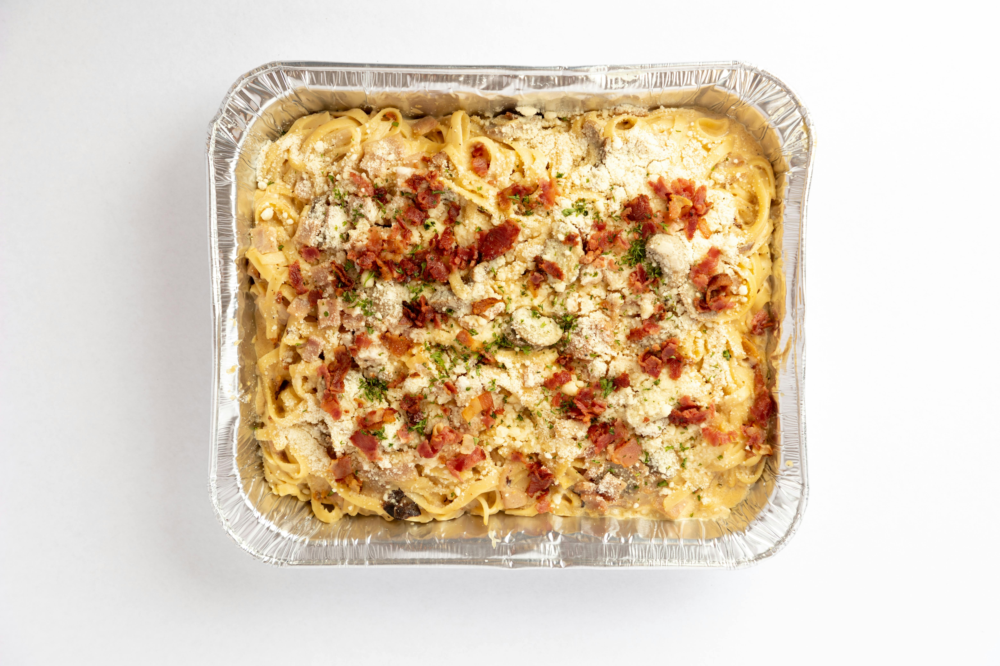

Home Page
Easy Baked Spaghetti Casserole

Photo by Christian Moises Pahati
Description
My family requests this recipe every year for birthday parties and other events! It's crowd- and family-friendly, as well as easy to make ahead and then refrigerate!
Ingredients
- cooking spray
- 12 ounces spaghetti
- 4 eggs, beaten
- ⅔ cup Parmesan cheese
- 2 tablespoons butter
- 1 cup cottage cheese, or more to taste
- 1 (28 ounce) jar spaghetti sauce
- 1 cup shredded mozzarella cheese, or to taste
Steps
- Preheat oven to 350 degrees F (175 degrees C). Prepare a 9x13-inch baking dish with cooking spray.
- Bring a large pot of lightly salted water to a boil. Cook spaghetti in the boiling water, stirring occasionally until cooked through but firm to the bite, about 12 minutes; drain and transfer to a large bowl.
- Mix eggs, Parmesan cheese, and butter with the spaghetti to coat pasta completely; spread into the prepared baking dish. Spread cottage cheese over the spaghetti to cover completely. Spread spaghetti sauce over the cottage cheese; top with a layer of mozzarella cheese.
- Bake until hot in the center, about 30 minutes.